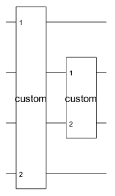

compositeGate
Installation Required: This functionality requires MATLAB Support Package for Quantum Computing.
Syntax
Description
cg = compositeGate(circuit,targetQubits)quantum.gate.CompositeGate object. The specified target qubits map each qubit of
the inner circuit to a qubit of the outer circuit containing the composite gate.
The length of the targetQubits vector must be equal to the number of
qubits in circuit. The Name property of
circuit is copied to the Name property of
cg.
cg = compositeGate(gates,targetQubits)
The length of the targetQubits vector must be greater than or equal
to the largest qubit index in gates.
Examples
Create a quantum circuit that consists of Hadamard and controlled NOT
gates to entangle two qubits. Name the circuit as "bell".
innerGates = [hGate(1); cxGate(1,2)];
innerCircuit = quantumCircuit(innerGates,Name="bell")innerCircuit =
quantumCircuit with properties:
NumQubits: 2
Gates: [2×1 quantum.gate.SimpleGate]
Name: "bell"Create an outer circuit that consists of two composite gates constructed from this
inner "bell" circuit. The first composite gate acts on qubits 1 and 3
of the outer circuit containing this gate. The second composite gate acts on qubits 2
and 4 of the outer circuit containing this gate. The qubits of the inner circuit (qubits
1 and 2) are mapped to the qubits of the outer circuit (qubits 1 and 3 for the first
composite gate, and qubits 2 and 4 for the second composite gate).
outerGates = [compositeGate(innerCircuit,[1 3])
compositeGate(innerCircuit,[2 4])];
outerCircuit = quantumCircuit(outerGates)outerCircuit =
quantumCircuit with properties:
NumQubits: 4
Gates: [2×1 quantum.gate.CompositeGate]
Name: ""Plot the outer circuit.
plot(outerCircuit)

In a circuit diagram, each solid horizontal line represents a qubit. The top line is a qubit with index 1 and the remaining lines from top to bottom are labeled sequentially. In this example, the plotted outer circuit consists of four qubits with indices 1, 2, 3, and 4. The plot shows that qubits 1 and 3 of the outer circuit are mapped to qubits 1 and 2 of the inner circuit of the first composite gate, and qubits 2 and 4 of the outer circuit are mapped to qubits 1 and 2 of the inner circuit of the second composite gate.
Click one of the composite gate blocks in the plot. A new figure showing the internal gates of the composite gate appears.

Create an array of inner gates that consists of a Pauli X gate, a Hadamard gate, and a swap gate.
gates = [xGate(1); hGate(2); swapGate(1,2)]
gates =
3×1 SimpleGate array with gates:
Id Gate Control Target
1 x 1
2 h 2
3 swap [1,2] Create two composite gates from the array of inner gates. The first composite gate acts on qubits 1 and 4 of the outer circuit containing this gate. The second composite gate acts on qubits 2 and 3 of the outer circuit containing this gate.
cg1 = compositeGate(gates,[1 4],Name="custom"); cg2 = compositeGate(gates,[2 3],Name="custom");
Create a quantum circuit that consists of these two composite gates.
circuit = quantumCircuit([cg1; cg2])
circuit =
quantumCircuit with properties:
NumQubits: 4
Gates: [2×1 quantum.gate.CompositeGate]
Name: ""Plot the circuit.
plot(circuit)

The plotted circuit consists of four qubits with indices 1, 2, 3, and 4. The plot shows that qubits 1 and 4 of the circuit are mapped to qubits 1 and 2 of the inner gates of the first composite gate, and qubits 2 and 3 of the circuit are mapped to qubits 1 and 2 of the inner gates of the second composite gate.
Input Arguments
Version History
Introduced in R2023a